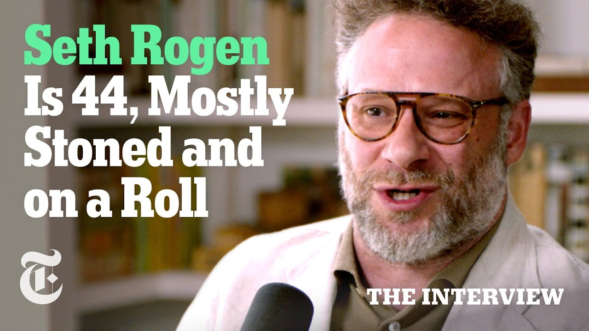

Seth Rogen on the Secret to a Good Marriage | The Interview

Summary
This interview focuses on the topic of Seth Rogen's career as well as on his views regarding creativity, collaboration, and personal development. The speaker describes the beginnings of his career, during which he lived in Vancouver and developed an interest in humor. After that, he moved to Los Angeles with the purpose of developing his talent in the area of acting. It is noteworthy that the cooperation of Seth Rogen and Evan Goldberg lasted for a fairly long period of time and was critical in his success..
Further, Seth Rogen states that teamwork in creative activities can be called essential for their success and development. In addition, it should be noted that the speaker mentions changes in the American movie business. According to Rogen, at the current stage, Hollywood has become more conservative regarding risks.
Besides, the speaker shares his ideas on the topic of male friendship and opens up about himself. As far as this issue is concerned, the interviewee believes that close friends can be characterized by kindness and communication. Finally, the person discusses cultural issues such as loneliness in males' relationships.
Speaker /(Guest): Seth Rogen
Interviewer / Host: The New York Times (The Interview
series)
Concept of the Interview: Marriage, relationships, emotional compatibility, and long-term
partnership dynamics
Personal Opinion
I“The reason I chose this interview is mainly because I'm a Seth Rogen fan and I thought it was more interesting than some of the other interviews in the collection, which I find less interesting.” This one was particularly refreshing, because it showed a more personal, down to earth side of him that is different from the characters that he usually plays in movies. Though his movie roles may project a carefree or “playboy” personality, the interview reveals he is a committed and supportive husband with a down-to-earth attitude. This contrast made the interview more interesting, and it helped me to understand his real personality beyond his public image..
Reflection
From this interview, I learned that public figures often have very different real personalities compared to the characters they portray in films. Previously, I tended to assume that actors’ on-screen roles reflected their actual lifestyle or behavior, but this interview challenged that idea. It showed me that Seth Rogen is more thoughtful, grounded, and relationship-oriented than many of his movie roles suggest. This helped me understand the importance of not judging people based on media portrayals alone. In the future, I will be more careful about forming assumptions about individuals and will try to understand people based on their real actions and values rather than their public image.
Date I Watched the Interview
July 12, 2026
New Vocabulary
- Emotional openness: the willingness to express feelings honestly in a relationship.